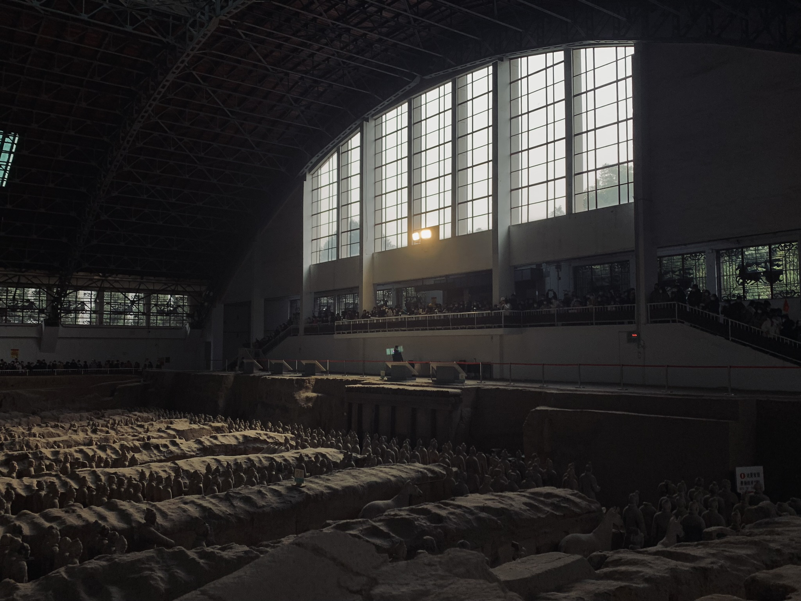
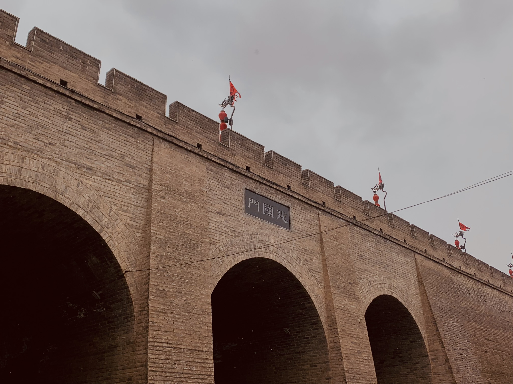

初中二年级在朋友的鼓励下加入学校管乐团，开始学习小号， 跟随乐队参加了数次大大小小的演出。期间， 我收获了友情和团队精神。 乐队排练通常占用午休时间，而大家却都乐此不疲。


我喜欢自己旅行，喜欢在陌生的城市感受当地的风土人情，喜欢探索一座座山峦，一条条河流 一片片大海。旅行带给我的是无限的静谧，我无比享受每次一旅行。
高三的五一，一天半单刷杭州！
一个人感受冬天的大唐！
 、
初中二年级在朋友的鼓励下加入学校管乐团，开始学习小号， 跟随乐队参加了数次大大小小的演出。期间， 我收获了友情和团队精神。 乐队排练通常占用午休时间，而大家却都乐此不疲。
我喜欢自己旅行，喜欢在陌生的城市感受当地的风土人情，喜欢探索一座座山峦，一条条河流 一片片大海。旅行带给我的是无限的静谧，我无比享受每次一旅行。